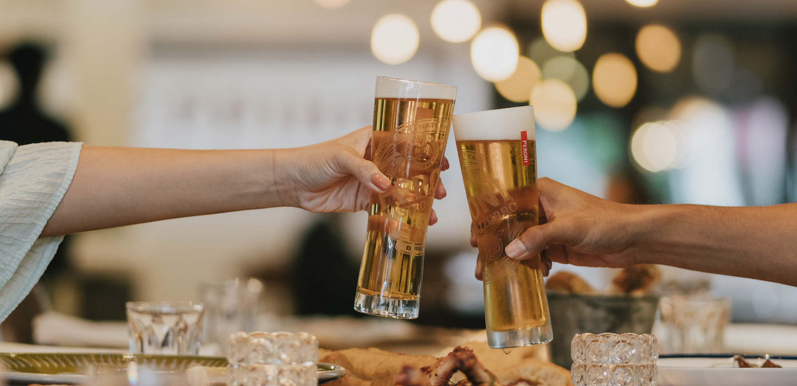

Hero Image

Beer Tasting Notes
Map
 -->
-->
THE TRUE TASTE OF ITALY
Brewed with the same flair and attention to detail through three generations of master brewers, Peroni Nastro Azzurro uses only the finest ingredients, including our exclusive Nostrano dell’Isola maize.